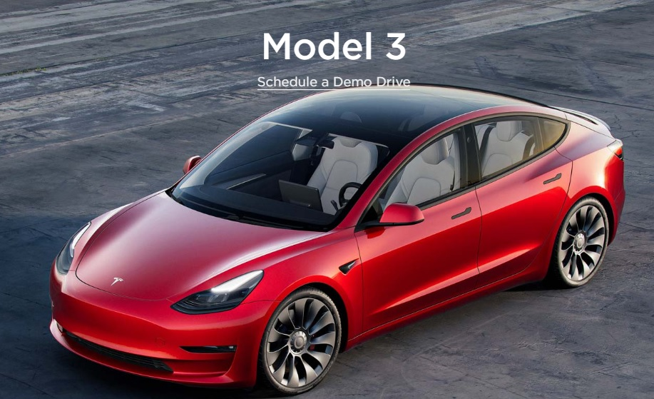
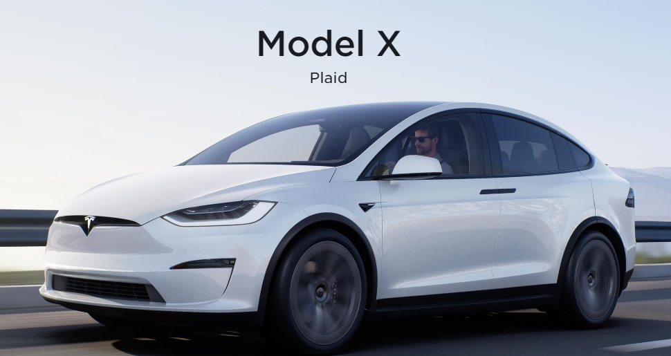
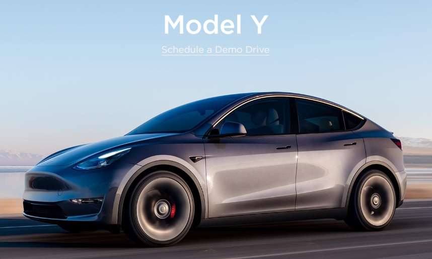
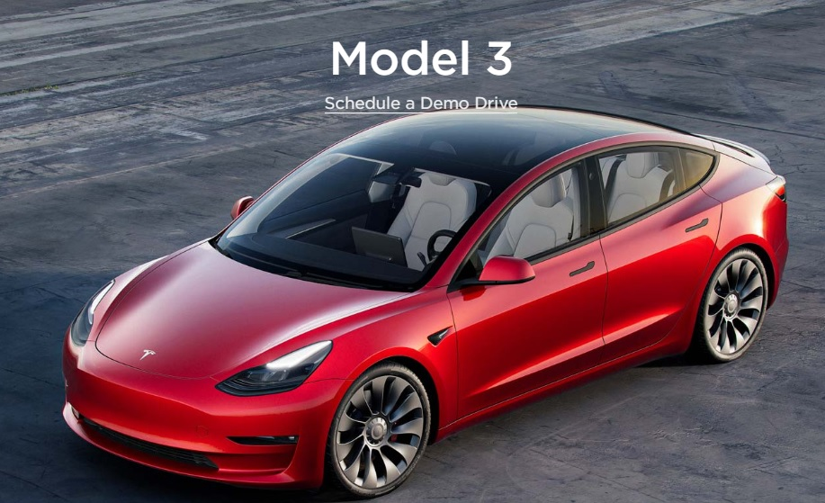
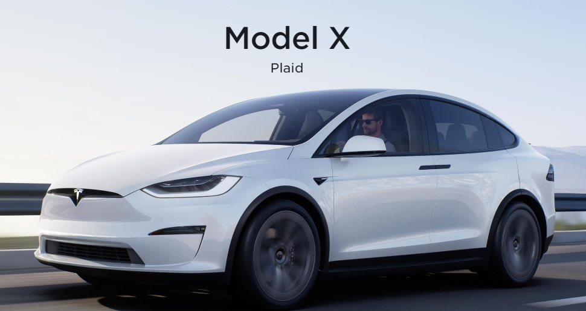
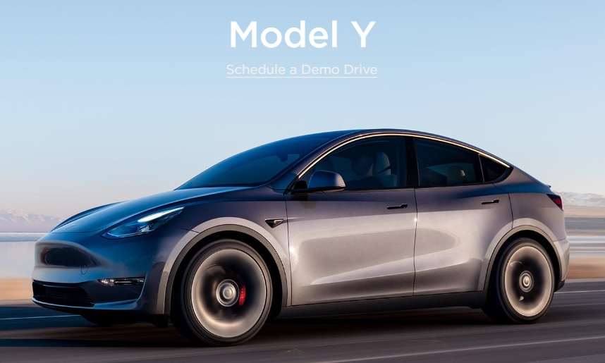

Check out these Tesla vehicle assessories!
One of the most common questions regarding the latest in passenger-car technology is: Do electric cars have gears? The question really should be: Do electric vehicles have more than one gear, but, in both cases the broad answer is no, they don't.
Many of the newer EV models boast a range over 300kms before recharging. The GM Bolt has a range of 383kms and the new Nissan LEAF has a similar range. Tesla's Model 3 and Hyundai's Kona have ranges around 500kms on a single charge.
The reality is that, in many instances, EVs handle long-distance just as well as their ICE 'opposition'. But even then, the reality is there are some elements of long-distance driving in an EV that you will have to take into consideration – and plan for – when it comes to a pollution-reducing road trip.
So the answer – ideally – is your electric car's battery should last at least eight years, if you were to buy a new one today. A few years from now, battery life will hopefully improve on that.
“EVs do not require oil which is necessary to lubricate the number of moving parts in a combustion engine. EVs are powered by electric motors, not the oil mandatory engines.”
If you just replace the tires on your Model 3 with the tires it came with, tires costs are a significantly larger cost than the battery over the life of the vehicle. The Tesla Model 3 Standard Range Plus (SR+) comes with Michelin Primacy MXM4 tires that have a treadwear rating of 500, a traction rating of A, and a temperature rating of A (500AA). You should get around 40,000 miles out of those tires, with a cost on Simpletire of $276. Add on local installation and a road hazard warranty and it comes to about $1,358 for 4 tires. $1,358 divided by 40,000 is about 3.4 cents a mile, or about 10 times as much as battery costs!
Your Tesla will not come with a spare tire/tyre, nor does it come with run flat tires/tyres, so if you get a puncture you are potentially stuck. Tesla offer a service where they will tow you up to 50 miles and possibly bring you a replacement wheel if you're near a service centre, but this has a couple of problems.
Electric cars are heavier because of the added batteries, reinforced framework and suspension, and the metal armor around the battery to protect it. This added weight slows down the vehicle and limits the total range you can achieve.
In reality, Tesla uses basically the same types of tires found on gas-powered vehicles, except the company makes a few changes along the way. ... Finally, tires used on Tesla vehicles are always radial tires, rather than bias-ply versions.
You may be asking yourself: “Does my electric car require winter tires?” The answer is yes.
Your BEV battery can charge using electricity and also with what's known as 'regenerative braking. ' When you brake while driving any car, heat and energy is usually lost. Regenerative braking means your BEV diverts that energy to help recharge your battery as you drive.
According to Volkswagen, the answer is yes, and easily. In the first stages of launching its new EV — the Volkswagen ID.4 — in North America, you can drive across the continent.
The risk of sitting in an electric car is just as low as sitting in a normal car while filling up with gas. Electric cars are designed to be safe for the users.
In some cases, electric cars last longer than gas cars. It all depends on how you define the phrase. An electric car will survive for more years.
UBS predicts that electric cars will account for 20 percent of new car sales in 2025, 40 percent in 2030, and almost 100 percent in 2040. Others are slightly more conservative. Analysis firm IHS Markit, the New York Times reported in March 2021, predicts electric cars will comprise just 62 percent of sales by 2050.
 




